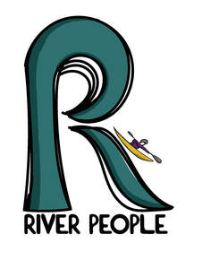

Trade Mark Journal No.2026/011 13 March 2026
UK00004345689 26 February 2026 (25,41)

- Class 25
- Clothing; T-shirts; Short-sleeved T-shirts; Shirts; Printed t-shirts; Long-sleeved shirts; Short-sleeved shirts; Tee-shirts; Casual shirts; Hooded sweatshirts; Beanie hats; Caps; Caps [headwear]; Baseball caps; Peaked caps; Sports caps and hats; Bucket caps; Sports caps; Beanies; Jumpers; Jumpers [sweaters]; Jumpers [pullovers]; Sweaters; Bobble hats; Knitwear [clothing]; Jackets [clothing]; Ready-to-wear clothing; Garments for protecting clothing; Jerseys [clothing]; Shorts [clothing]; Windproof clothing; Rainproof clothing; Waterproof clothing; Casual clothing; Stuff jackets [clothing]; Clothing for leisure wear; Clothing for sports; Sports clothing; Athletic clothing; Weatherproof clothing; Water-resistant clothing; Beach clothing; Men's clothing; Women's clothing; Clothes; Leisure clothing; Clothes for sports; Thermal clothing; Socks; Leggings [trousers]; Pants; Yoga pants; Sweatpants; Shorts; Thong sandals; Jogging pants; Fleece tops; Sweatshirts.
- Class 41
- Conducting guided tours; Organization, arranging and conducting of boat races; Instruction; Arranging of courses of instruction; Instruction services; Sports tuition, coaching and instruction; Arranging of courses of instruction for tourists; Fitness and exercise instruction; Provision of courses of instruction; Physical education instruction; Instruction in sporting activities; Sports instruction services; Provision of courses of instruction relating to sport; Providing online courses of instruction; Educational and instruction services relating to sport; Instruction courses relating to physical fitness; Coaching; Coaching [training]; Sports coaching; Personal coaching [training]; Life coaching (training); Sports coaching services; Coaching services; Coaching in the field of sports; Training of sports players; Coaching services for sporting activities; Training of sports teachers; Sports training; Training in sports; Education, teaching and training; Educational and training services relating to sport; Organisation of training seminars; Instructional and training services; Organisation of training courses; Sport camp services; Camp services (Sport -); Providing online training seminars; Training and instruction; Provision of training courses in personal development; Training of teachers; Vocational skills training; Organisation of recreational tournaments; Consultancy relating to vocational skills training; Career and vocational training; Organisation of sports tournaments; Organisation of youth training schemes; Organisation of sports tuition; Business mentoring services; Organisation of sports competitions; Training and education services; Recreation and training services; Training courses; Publication of educational and training guides; Training consultancy; Management training services; Staff training services; Health and wellness training; Educational and training programs in the field of risk management; Consultancy services relating to the education and training of management and of personnel; Arrangement of training courses in teaching institutes; Sports and fitness services; Training and further training consultancy; Consultancy services relating to the development of training courses; Organisation of recreational competitions; Organisation of recreational activities; Residential education courses relating to canoeing; Organisation of group recreational activities; Organising of recreational events; Sporting and recreational activities; Organization of education competitions; Recreational camps; Provision of recreational events; Competitions (Organization of sports -); Organization of sports competitions; Instruction in sports; Organization of competitions [education or entertainment]; Competitions (Organization of -) [education or entertainment]; Organization of competitions for education or entertainment; Organisation of competitions [education or entertainment]; Recreational camp services; Provision of facilities for outdoor recreational activities; Festivals (Organisation of -) for recreational purposes; Organisation of sporting activities and competitions; Educational courses relating to the travel industry; Recreational services relating to hiking; Provision of recreational activities; Providing education courses relating to the travel industry; Recreational services relating to back-packing; Education courses relating to the travel industry; Sport camps; Organization of boat races; Workshops for recreational purposes; Arranging of workshops and seminars; Conducting courses, seminars and workshops; Arranging of workshops; Arranging and conducting of seminars and workshops; Arranging and conducting of workshops and seminars; Conducting workshops [training]; Seminars; Workshops for training purposes; Arranging and conducting of training workshops; Workshops (Arranging and conducting of -) [training]; Workshops for educational purposes; Organising of educational seminars; Organisation of seminars and conferences; Arranging and conducting of workshops; Arranging and conducting workshops; Arranging professional workshop and training courses; Organising of education seminars; Workshops for cultural purposes; Educational seminars; Arranging, conducting and organisation of workshops; Conducting training seminars; Arranging and conducting conferences and seminars; Conducting seminars; Conducting of seminars and congresses; Organisation of seminars; Conducting of instructional seminars; Arranging of seminars; Conducting training seminars for clients; Organisation of educational seminars; Organisation of conferences, exhibitions and competitions; Organising of educational lectures; Arranging and conducting of training seminars; Arranging and conducting of conferences, congresses and symposiums; Organising of educational conferences; Organisation of seminars relating to training; Conducting of educational conferences; Organising of education conferences; Organising of educational exhibitions; Organisation of meetings and conferences; Arranging of presentations for training purposes; Consultancy and information services relating to arranging, conducting and organisation of workshops; Arranging of educational conferences; Organising of conferences for educational purposes; Production of course material distributed at vocational seminars; Training; Education and training; Vocational training; Employment training; Education and training consultancy; Organisation of training; Advanced training; Practical training; Training in catering; Providing of training; Providing training; Providing courses of training; Medical training and teaching; Training in philosophy; Fitness training services; Business training; Continuous training; Training in administration; Vocational training services; Fitness and exercise training services; Education and training services; Adult training; Vocational training courses (Provision of -); Teacher training services; Residential training courses; Provision of training and education; Vocational skills training (Provision of -); Training in business skills; Practical training services; Educational and training services; Vocational education and training services; Educational services in the nature of coaching; Rental of paddleboards; Rental of snorkels; Rental of kites; Rental of skates; Rental of skateboards; Rental of diving equipment; Rental of artwork; Rental of surf boards; Arranging of guided educational tours; Conducting guided climbing tours; Conducting guided walking tours; Organisation of guided educational tours; Conducting of guided educational tours; Providing online virtual guided tours; Conducting guided tours of cultural sites for educational purposes; Conducting of tours for training purposes; Organisation of tours for training purposes; Rental of concert halls; Arrranging of tours for training purposes; Live band performances; Live performances by a musical band; Rental of stage scenery; Services for the publication of travel guides; Adventure training for children; Adventure playground services; Organisation of entertainment activities for summer camps; Summer camps [entertainment and education]; Organising of educational games; Holiday camp services; Camp services (Holiday -) [entertainment]; Holiday camp services [entertainment]; Holiday camp amusement centre services; Holiday centre entertainment services; Education services provided by holiday resort establishments; Organisation of entertainment for birthday parties; Organisation of educational activities for summer camps; Arranging and conducting of workshops and seminars in self-awareness; Occupationally orientated instruction; Arranging and conducting of lectures; Arranging and conducting of workshops [training]; Publication of directories relating to tourism; Education services provided by tourist resort establishments; Wildlife centre services [for recreational purposes]; Provision of visitor attractions for cultural purposes; Rental services relating to equipment and facilities for education, entertainment, sports and culture; Ticket reservation and booking services for education, entertainment and sports activities and events; Ticket reservation and booking services for recreational and leisure events; Education, entertainment and sport services; Education services relating to industry; Ticket agency services [entertainment]; Photography; Portrait photography; Aerial photography; Portrait photography services; Photography services; Photography instruction; Macro photography services; Audio and video production, and photography; Film editing (Photographic -); Audio, video and multimedia production, and photography; Aerial photography via drones; Photographer services; Education services relating to photography; Photographic imaging services by drone; Post-production editing services in the field of music, videos and film; Aerial videography services; Photo editing; Audio and video editing services; Video editing services for events; Video editing; Editing of video recordings; Video recording services; Sound recording and video entertainment services; Audio and video recording services; Video entertainment services; Studio services for the recording of videos; Recording studio services for videos; Providing audio or video studio services; Video production services; Digital video, audio and multimedia entertainment publishing services; Audio, film, video and television recording services; Video imaging services by drone; Recording, film, video and television studio services; Entertainment services for sharing audio and video recordings; Rental of video cameras; Video cameras (Rental of -); Video and audio rental services; Videotape editing; Editing (Videotape -); Video tape editing; Provision of video recording studio services; Rental services for audio and video equipment; Hire of video recordings; Editing of audio recordings; Film editing (Cinematographic -); Services for the production of entertainment in the form of video; Cinematographic film studio services; Recording studio services for films; Audio recording studio services; Film editing; Special effects animation services for film and video; Audio recording and production services; Production of video recordings; Video rental services; Production of video and audio recordings; Music recording studio services; Services for the showing of video recordings; Audio recording services; Rental of video recordings; Cinematographic entertainment services; Entertainment services for matching users with audio and video recordings; Production of video films; Video equipment hire; Providing audio or video studios; Hire of video recorders; Production of entertainment in the form of video tapes; Video production; Video film production; Recording studio services; Production of pre-recorded video films; Film studio services; Rental of video films; Rental of video tapes and motion pictures; Production of sound and video recordings; Audio entertainment services; Training courses in strategic planning relating to advertising, promotion, marketing and business.
Benjamin Rowlands a partner in the River People Partnership
Thomas Rainey a partner in the River People Partnership